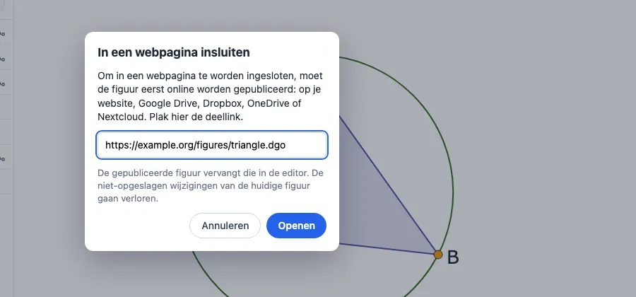
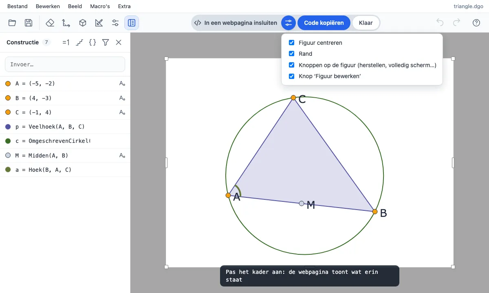
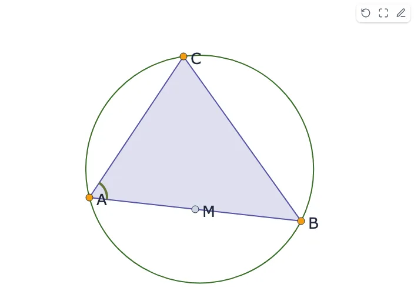

In een webpagina insluiten
Een DocGeo-figuur kan in elke webpagina verschijnen — je website, een Moodle-cursus, een blog — en daar worden gemanipuleerd zoals in DocGeo. Je plakt alleen een code die de editor klaarmaakt in de HTML van de pagina. De figuur past zich aan de breedte van de pagina aan, ook op een telefoon.
Het principe
De pagina bevat de figuur niet: telkens wanneer ze wordt getoond, leest ze de figuur op de plek waar je die online hebt gepubliceerd. Daarom:
- moet de figuur eerst online worden gezet, zoals om haar via een link te delen;
- volstaat het om het gepubliceerde bestand te vervangen om de pagina bij te werken: alle pagina’s die de figuur insluiten, tonen meteen de nieuwe versie, zonder dat hun code verandert.
Stap voor stap
-
Sla de figuur op (Ctrl S) en zet het
.dgo-bestand online: op je website, Google Drive, Dropbox, OneDrive of Nextcloud. Kopieer de deellink. -
Kies Bestand › In een webpagina insluiten….
Werd de figuur niet via haar link geopend, dan vraagt DocGeo
erom: plak hem en klik op Openen. De
gepubliceerde figuur vervangt dan die in de editor; zo werkt
de code zeker.

- Er verschijnt een kader over de figuur: de pagina toont precies wat erin staat. De grepen (hoeken en midden van de zijden) veranderen de grootte, de randen en het label verplaatsen het. Om in te kaderen kun je ook zoomen, de weergave verschuiven of een 3D-figuur draaien; de figuur blijft manipuleerbaar.
-
Stel zo nodig de opties in, met de knop links van
Code kopiëren.

- Klik op Code kopiëren en plak deze code in de HTML van je pagina.
- Klaar of Esc haalt het kader weg.
De opties
| Optie | Effect |
|---|---|
| Figuur centreren |
zet de code tussen <center>:
de figuur staat gecentreerd in de pagina.
|
| Rand | een dunne grijze lijn rond de figuur. |
| Knoppen op de figuur | een kleine balk rechtsboven in de figuur, zichtbaar wanneer de muis erboven is: de figuur herstellen, volledig scherm tonen. |
| Knop ‘Figuur bewerken’ | voegt aan die balk een knop toe die de figuur in de editor opent, in een nieuw tabblad. Vink hem bijvoorbeeld uit, zodat leerlingen de constructie niet zien. |
Alle opties zijn eerst aangevinkt; je keuzes blijven bewaard tot de editor wordt gesloten.
De code om te plakken
De gekopieerde code ziet er zo uit:
<center><iframe
src="https://…/index.html?fit=704,512,…&url=https://…/triangle.dgo"
style="width:704px;max-width:100%;aspect-ratio:704/512;border:1px solid #ccc"
allow="fullscreen" loading="lazy"></iframe></center>
Om de grootte van de figuur in de pagina te veranderen, wijzig
je alleen width, in pixels: de hoogte volgt, en de
figuur behoudt de verhoudingen van het kader. Op een smaller
scherm, zoals dat van een telefoon, wordt ze vanzelf kleiner
(max-width:100%). Wijzig
aspect-ratio alleen om de plek van de figuur een
andere vorm te geven; de figuur blijft daarin heel en
gecentreerd. De getallen na fit= beschrijven wat de
figuur toont, niet haar grootte: wijzig ze niet.
Plak de code waar de pagina HTML aanvaardt: in het
.html-bestand zelf, in een WordPress-blok
‘Aangepaste HTML’, of in de HTML-modus (broncode) van de
teksteditor van Moodle.
In de pagina
De figuur wordt er gemanipuleerd zoals in DocGeo: punten, schuifregelaars, selectievakjes, knoppen… Slepen op een lege plek verschuift de weergave, of draait ze in 3D. Het muiswiel scrolt de pagina, zoals overal; om op de figuur te zoomen gebruik je Ctrl + muiswiel, of knijp je op het touchpad.
Beweeg twee vingers uit elkaar om in te zoomen en naar elkaar toe om uit te zoomen. Verschuif beide vingers samen om de weergave te verplaatsen.
De knoppen rechtsboven herstellen de figuur (zoals de pagina haar opende), tonen haar op volledig scherm en openen haar, als de optie is aangevinkt, in de editor.

Een ingesloten figuur bijwerken
Open de figuur via haar link in de editor (bijvoorbeeld met de knop ‘Figuur bewerken’ van de pagina), wijzig ze en sla ze op, en vervang dan het gepubliceerde bestand op dezelfde plek, met dezelfde link: op Google Drive door een nieuwe versie van het bestand te uploaden; op Dropbox, OneDrive of Nextcloud door het nieuwe bestand onder dezelfde naam in dezelfde map te zetten. Alle pagina’s die de figuur insluiten, tonen dan de nieuwe versie, zonder dat hun code verandert.
Om alleen het kader te veranderen, kies je opnieuw Bestand › In een webpagina insluiten… en kopieer je de nieuwe code: het gepubliceerde bestand hoeft niet te veranderen.
Is de figuur in de editor gewijzigd sinds ze via haar link werd geopend, dan meldt DocGeo dat voordat het kader verschijnt: zolang het gepubliceerde bestand niet is vervangen, toont de pagina de vorige versie.
Als de figuur niet verschijnt
- De link moet openbaar zijn: toegang ‘Iedereen met de link’ op Google Drive, een link zonder wachtwoord op Nextcloud.
-
Sommige platforms verwijderen
<iframe>uit geplakte HTML, of aanvaarden ze alleen voor bepaalde sites of gebruikers: controleer de instellingen van het jouwe. -
Een code die is gekopieerd uit een DocGeo dat op je computer
is geïnstalleerd (adres
localhost), werkt alleen daarop: kopieer de code uit de online editor. -
De knop voor volledig scherm verschijnt alleen als het
<iframe>het attribuutallow="fullscreen"heeft, dat de gekopieerde code bevat.